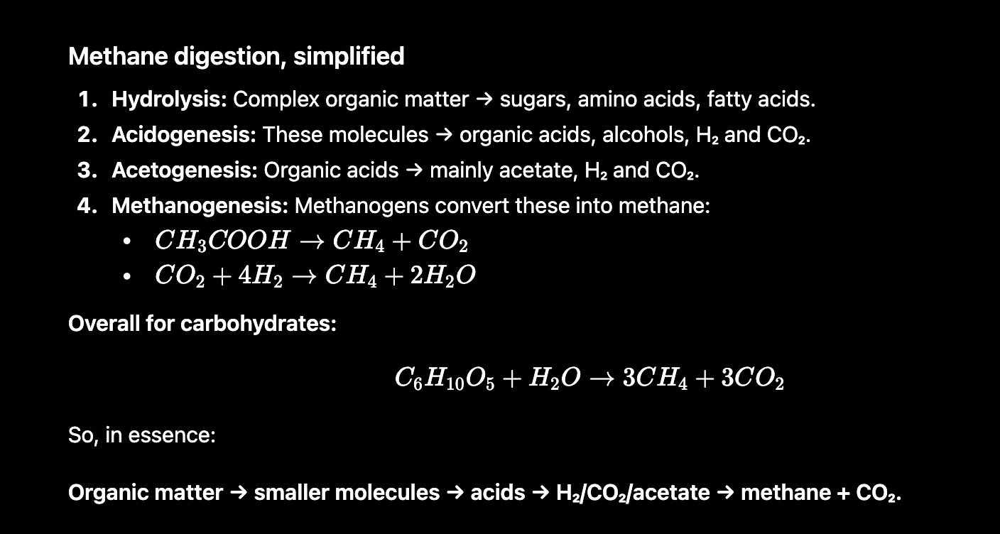
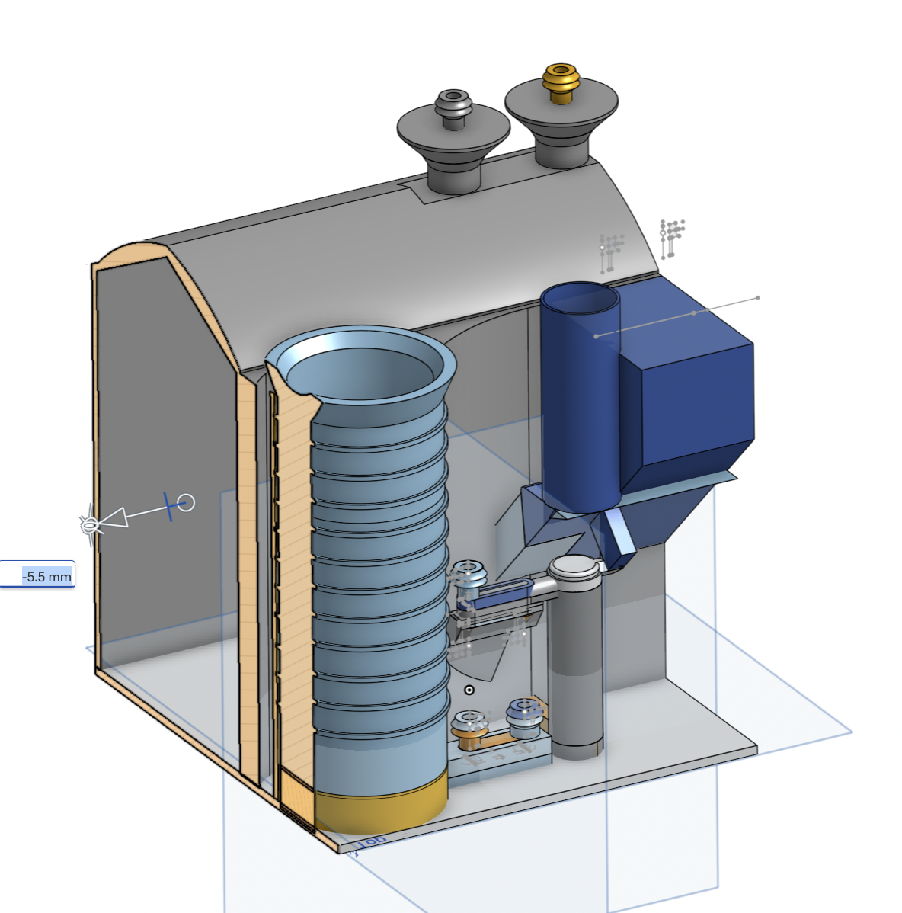
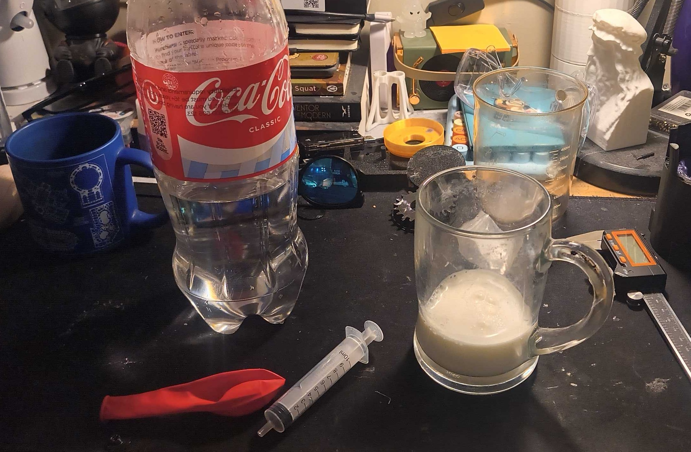
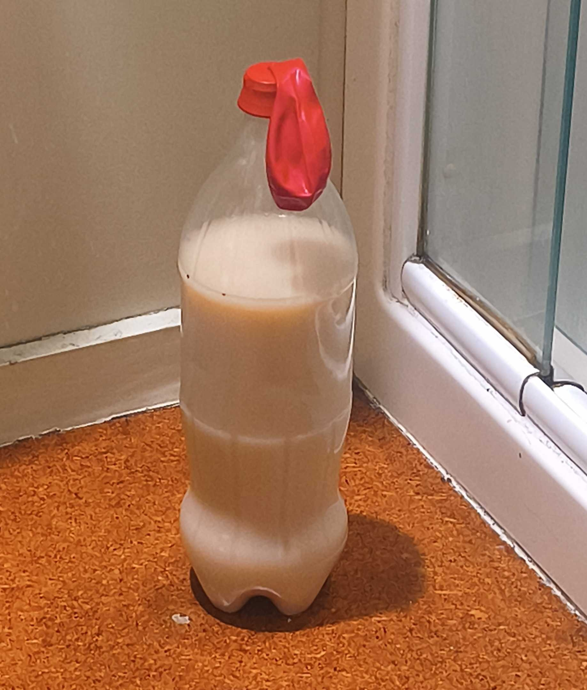
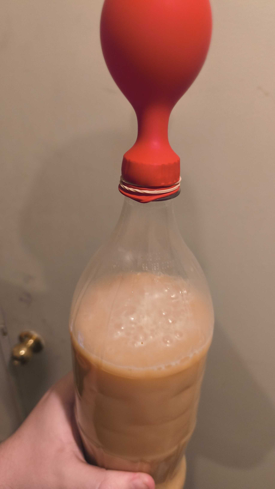
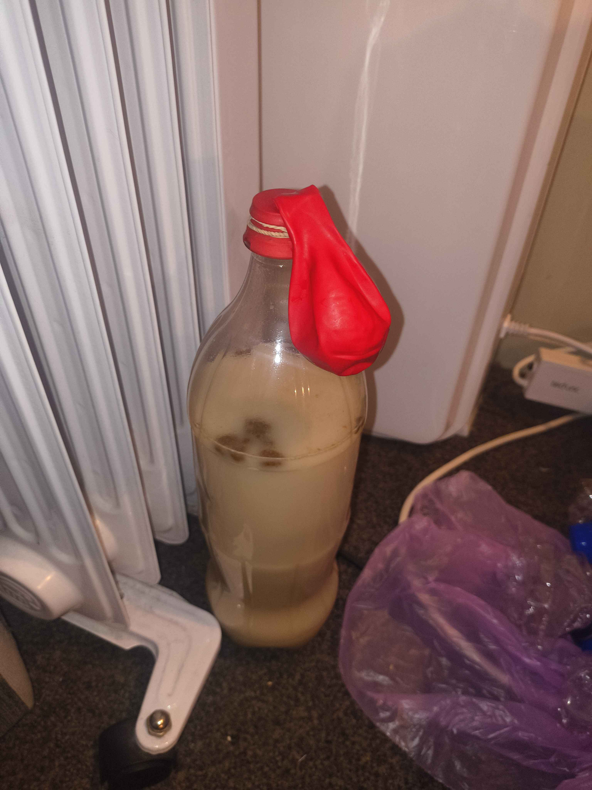
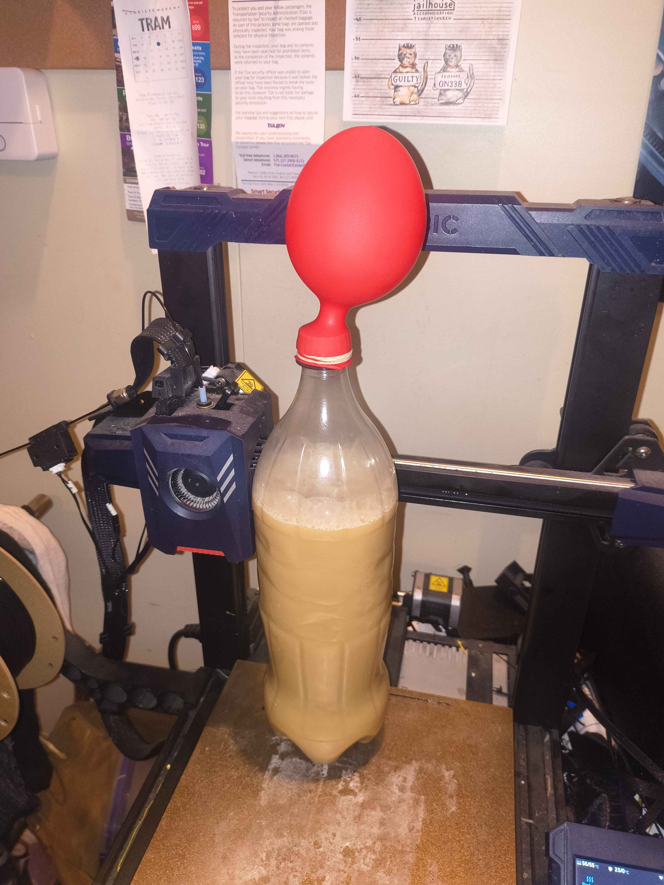

Free AI Website Creator
AI chemical process summary
at it's core we have
a input of organic feedstock + a initial colony of bacteria (based on fecal matter)
this creates a artificial "stomach" normally animal stomachs process things into what use for fuel like fat,
(read about "autotrophs vs heterotrophs" for info about the cycle)
in our artificial "stomach"
is instead converted directly into methane that we can use as a more typical fuel for modern industry.
some important things to note is
1. the fecal matter is typically works best from omnivores (animals eating both plants and meats)
2. heat is extremely important for the development of this process
3. final gas does require some filtering from dangerously elements like H2S (produced in very small % amounts)
4. initially the system produces mostly just co2 and only after a long time does methane start to be produced
5. remember that working with fecal matter is not really a "fun time" if something fails or spills so consider doing this outdoors during high temp weather
(i am risker then most)

old 3d printed methane digestor system with slight cut in view
back when i was working on the aquaphyto i designed a system to work in complement that being turning the produced algae into a higher density fuel whose waste products could be recycled for the most part for a close loop system.
i did print out a fun working copy of this but had to do a redesign do to over as i overestimated the capability of 3d printed airtight ball check valves. though i did prove the general feasibility of the tpu role in the system allowing me to use fully 3d printed gaskets for pumping. Instead of relying on rubber at all, greatly improving the adaptability and 3d-printing % of the system.
i never tested the chemical process directly and that is what i hope to do next before further refining these midscale 3d printed versions

general elements: syringe, balloon, milk
elements not displayed: "fecal" and "urea" sources
i decided to begin with some quick testing of just the chemical process so i could get some hand on with it and learn the ups and downs. alongside saving the money on filament before i commit to a midsize directly designed system. I decided on just a simple batch production of the methane using milk as the feedstock and a simple balloon for the storage of the resulting gas. "fecal" and "urea" sources were then added and the balloon was placed on top of the bottle with the bottle cap having a small hole for the gas to escape using.

this shows the status of the reaction on day 1
the balloon shows no real inflation and the solution appears the same as the initial white color from the milk.

update: day 3
now appears as a consistent solution and bubbles are present within the surface
when tilted at 90 degrees the balloon shows a clear indication of floating. this indicates that methane could be being produced not just co2, as co2 is densier then the air and methane is lighter

update: day 2
a browning of the solution showing that a growth of methane producing systems might have started to take effect alongside a slight bulge within the balloon

photo of the system at day 13 being heated briefly
in the final days of the first test i did a lot to try and boost performance including setting the system on my 3d printer's hotbed and presetting a heat to try and warm the system up a little and attempt to boost performance of the chemical reactions. i only did this for 1-2 hours a day over the last few days and it didn't seemed to have much of a large affect apart from a very slight increase in the "bubble production" during that period.
the balloon remained lighter then the air when tilted and seemed to have gotten a good doubling in volume
i knew that based on the reaction most of it would be co2 in the early stage but by now i believed that by now a noticeable amount of methane would have been formed. enough to ignite even if just slightly.
Going to refill the feedstock with more milk and leave it running on a much longer timescale, will work on other projects until then. Perhaps model up a better co2 filtration system and a better model to test igniting the flame?
This is a project where i have to ensure that i am on the right track of production with the fundamental chemistry on a small scale, before i can invest the $ into the several 3d printed tests and the other equipment of heating and monitoring systems.
Free AI Website Creator